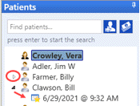

Viewing and Changing Appointment Details
There are several ways to view and edit existing appointments.
Method 1
Using the Months Panel, set the Appointment Grid to display the desired day. Double-click on the appointment. The Appointment Details pop-up will appear and you can make any changes needed. Click OK to save. If you click Cancel, any changes made will not be saved
Method 2 - from Patient Tree
On the Patient tree - an arrow symbol to the left of the name indicates that the patient has a recent or future appointment. Click the arrow to expand the tree and view the appointment date and time. Double-click on the date to view the appointment details. Make any changes needed and click OK to save.
to the left of the name indicates that the patient has a recent or future appointment. Click the arrow to expand the tree and view the appointment date and time. Double-click on the date to view the appointment details. Make any changes needed and click OK to save.

 Note - viewing an appointment from the tree will not change the day displayed on the Appointment Grid - so it is a good way to view and/or change a future appointment's details without losing your place on the grid.
Note - viewing an appointment from the tree will not change the day displayed on the Appointment Grid - so it is a good way to view and/or change a future appointment's details without losing your place on the grid.
Method 3 - Dragging on the Grid
Change Start or End Time (Duration)
Using the Months Panel, set the Appointment Grid to display the desired day. Change the Start or End time only by dragging the block on the grid. Hold your mouse over the top or bottom edge until a double-headed arrow appears. Then hold the left mouse button down while dragging to the desired time slot. Let go of the mouse button to save your changes.

Change Day
Set the Appointment Grid to display multiple days that include the existing appointment and the day you wish to move the appointment to. Drag the appointment to the day and time you wish to reschedule it for.

Change Provider, Site, and/or Resource
If the calendar is in the Providers, Sites, or Resources view, you can also drag the appointment to a different column to change the Provider, Site or Resource.

Method 4 - Right-Clicking on the Grid
Beginning in version 6.07, appointment statuses can be set to "Show in Context Menu". This means that you can quickly change the status by right-clicking on the appointment, selecting Set Status, then choosing the desired one.

Notes:
- If you make any changes to Start time, Duration, or Provider, the changes will be reflected on the Appointment Grid as soon as you click Save.
- Only the Appt Type, Status, Marketing Source, Authorization, Next Contact date, and Notes fields can be edited in appointments that have attached Claim Transactions. A message on the appointment details will let you know if this is the case.